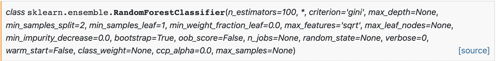

EMG Prediction
Models
After recording, processing, and extracting features from a window of EMG data, it is passed to a machine learning algorithm for prediction. These control systems have evolved in the prosthetics community for continuously predicting muscular contractions for enabling prosthesis control. Therefore, they are primarily limited to recognizing static contractions (e.g., hand open/close and wrist flexion/extension) as they have no temporal awareness. Currently, this is the form of recognition supported by LibEMG and is an initial step to explore EMG as an interaction opportunity for general-purpose use. This section highlights the machine-learning strategies that are part of LibEMG’s pipeline.
There are two types of models supported in LibEMG: classifiers and regressors. Classifiers output a discrete motion class for each window, whereas regressors output a continuous prediction along a degree of freedom. For both classifiers and regressors, LibEMG supports statistical models as well as deep learning models. Additionally, a number of post-processing methods (i.e., techniques to improve performance after prediction) are supported for all models.
Statistical Models
The statistical models (i.e., traditional machine learning methods) implemented leverage the sklearn package. For most cases, the “base” models use the default options, meaning that the pre-defined models are not necessarily optimal. However, the parameters attribute can be used when initializing the models to pass in additional sklearn parameters in a dictionary. For example, looking at the RandomForestClassifier docs on sklearn:

A classifier with any of those parameters using the parameters attribute. For example:
parameters = {
'n_estimators': 99,
'max_depth': 20,
'random_state': 5,
'max_leaf_nodes': 10
}
classifier.fit(data_set, parameters=parameters)
The same process can be done using the RandomForestRegressor from sklearn and an EMGRegressor. Please reference the sklearn docs for parameter options for each model.
Additionally, custom models can be created. Any custom classifier should be modeled after the sklearn classifiers and must have the fit, predict, and predict_proba functions to work correctly. Any custom regressor should be modeled after the sklearn regressors and must have the fit and predict methods.
from sklearn.ensemble import RandomForestClassifier
from libemg.predictor import EMGClassifier
rf_custom_classifier = RandomForestClassifier(max_depth=5, random_state=0)
classifier = EMGClassifier(rf_custom_classifier)
classifier.fit(data_set)
Deep Learning (Pytorch)
Another available option is to use pytorch models (i.e., a library for deep learning) to train the model, although this involves making some custom code for preparing the dataset and the deep learning model. For a guide on how to use deep learning models, consult the deep learning example. The same methods are expected to be implemented for both deep and statistical classifiers/regressors.
Classifiers
Below is a list of the classifiers that can be instatiated by passing in a string to the EMGClassifier. For other classifiers, pass in a custom model that has the fit, predict, and predict_proba methods.
Linear Discriminant Analysis (LDA)
A linear classifier that uses common covariances for all classes and assumes a normal distribution.
classifier = EMGClassifier('LDA')
classifier.fit(data_set)
Check out the LDA docs here.
K-Nearest Neighbour (KNN)
Discriminates between inputs using the K closest samples in feature space. The implemented version in the library defaults to k = 5. A commonly used classifier for EMG-based recognition.
params = {'n_neighbors': 5} # Optional
classifier = EMGClassifier('KNN')
classifier.fit(data_set, parameters=params)
Check out the KNN docs here.
Support Vector Machines (SVM)
A hyperplane that maximizes the distance between classes is used as the boundary for recognition. A commonly used classifier for EMG-based recognition.
classifier = EMGClassifier('SVM')
classifier.fit(data_set)
Check out the SVM docs here.
Artificial Neural Networks (MLP)
A deep learning technique that uses human-like “neurons” to model data to help discriminate between inputs. Especially for this model, we highly recommend you create your own.
classifier = EMGClassifier('MLP')
classifier.fit(data_set)
Check out the MLP docs here.
Random Forest (RF)
Uses a combination of decision trees to discriminate between inputs.
classifier = EMGClassifier('RF')
classifier.fit(data_set)
Check out the RF docs here.
Quadratic Discriminant Analysis (QDA)
A quadratic classifier that uses class-specific covariances and assumes normally distributed classes.
classifier = EMGClassifier('QDA')
classifier.fit(data_set)
Check out the QDA docs here.
Gaussian Naive Bayes (NB)
Assumes independence of all input features and normally distributed classes.
classifier = EMGClassifier('NB')
classifier.fit(data_set)
Check out the NB docs here.
Regressors
Below is a list of the regressors that can be instatiated by passing in a string to the EMGRegressor. For other regressors, pass in a custom model that has the fit and predict methods.
Linear Regression (LR)
A linear regressor that aims to minimize the residual sum of squares between the predicted values and the true targets.
regressor = EMGRegressor('LR')
regressor.fit(data_set)
Check out the LR docs here.
Support Vector Machines (SVM)
A regressor that uses a kernel trick to find the hyperplane that best fits the data.
regressor = EMGRegressor('SVM')
regressor.fit(data_set)
Check out the SVM docs here.
Artificial Neural Networks (MLP)
A deep learning technique that uses human-like “neurons” to model data to help discriminate between inputs. Especially for this model, we highly recommend you create your own.
regressor = EMGRegressor('MLP')
regressor.fit(data_set)
Check out the MLP docs here.
Random Forest (RF)
Uses a combination of decision trees to discriminate between inputs.
regressor = EMGRegressor('RF')
regressor.fit(data_set)
Check out the RF docs here.
Gradient Boosting (GB)
Additive model that fits a regression tree on the negative gradient of the loss function.
regressor = EMGRegressor('GB')
regressor.fit(data_set)
Check out the GB docs here.
Post-Processing
Classification
Rejection
Classifier outputs are overridden to a default or inactive state when the output decision is uncertain. This concept stems from the notion that it is often better (less costly) to incorrectly do nothing than it is to erroneously activate an output.
Confidence [1]: Rejects based on a predefined confidence threshold (between 0-1). If predicted probability is less than the confidence threshold, the decision is rejected. Figure 1 exemplifies rejection using an SVM classifier with a threshold of 0.8.
# Add rejection with 90% confidence threshold
classifier.add_rejection(threshold=0.9)
Majority Voting [2,3]
Overrides the current output with the label corresponding to the class that occurred most frequently over the past \(N\) decisions. As a form of simple low-pass filter, this introduces a delay into the system but reduces the likelihood of spurious false activations. Figure 1 exemplifies applying a majority vote of 5 samples to a decision stream.
# Add majority vote on 10 samples
classifier.add_majority_vote(num_samples=10)
Velocity Control [4]
Outputs an associated velocity with each prediction that estimates the level of muscular contractions (normalized by the particular class). This means that within the same contraction, users can contract harder or lighter to control the velocity of a device. Note that ramp contractions should be accumulated during the training phase.
# Add velocity control
classifier.add_velocity(train_windows, train_labels)
Figure 1 shows the decision stream (i.e., the predictions over time) of a classifier with no post-processing, rejection, and majority voting. In this example, the shaded regions show the ground truth label, whereas the colour of each point represents the predicted label. All black points indicate predictions that have been rejected.
Figure 1: Decision Stream of No Post-Processing, Rejection, and Majority Voting. This can be created using the .visualize() method call.
Regression
Deadband [5]
Modifies a regressor’s output based on whether the prediction’s magnitude is above a certain threshold. Any value whose magnitude is less than the defined threshold is output as 0. This preprocessing technique is typically used to combat drift at lower amplitudes.
# Add deadband to regressor (i.e., values with magnitude < 0.25 will be output as 0)
regressor.add_deadband(0.25)
Figure 2 shows the decision stream of a regressor with no post-processing and deadband thresholding. In this visualization, the shaded blue regions are the ground truth and each black dot corresponds to a single prediction. Predictions for each degree of freedom (DOF) are plotted on separate subplots for visual clarity.
Figure 2: Decision Stream of Regressor with No Post-Processing and Deadband Thresholding. This can be created using the regressor's .visualize() method call.
References
[1] E. J. Scheme, B. S. Hudgins and K. B. Englehart, “Confidence-Based Rejection for Improved Pattern Recognition Myoelectric Control,” in IEEE Transactions on Biomedical Engineering, vol. 60, no. 6, pp. 1563-1570, June 2013, doi: 10.1109/TBME.2013.2238939.
[2] Scheme E, Englehart K. Training Strategies for Mitigating the Effect of Proportional Control on Classification in Pattern Recognition Based Myoelectric Control. J Prosthet Orthot. 2013 Apr 1;25(2):76-83. doi: 10.1097/JPO.0b013e318289950b. PMID: 23894224; PMCID: PMC3719876.
[3] Wahid MF, Tafreshi R, Langari R. A Multi-Window Majority Voting Strategy to Improve Hand Gesture Recognition Accuracies Using Electromyography Signal. IEEE Trans Neural Syst Rehabil Eng. 2020 Feb;28(2):427-436. doi: 10.1109/TNSRE.2019.2961706. Epub 2019 Dec 23. PMID: 31870989.
[4] E. Scheme, B. Lock, L. Hargrove, W. Hill, U. Kuruganti and K. Englehart, “Motion Normalized Proportional Control for Improved Pattern Recognition-Based Myoelectric Control,” in IEEE Transactions on Neural Systems and Rehabilitation Engineering, vol. 22, no. 1, pp. 149-157, Jan. 2014, doi: 10.1109/TNSRE.2013.2247421.
[5] A. Ameri, E. N. Kamavuako, E. J. Scheme, K. B. Englehart, and P. A. Parker, “Support vector regression for improved real-time, simultaneous myoelectric control,” IEEE Transactions on Neural Systems and Rehabilitation Engineering, vol. 22, no. 6, pp. 1198–1209, Nov. 2014, doi: 10.1109/TNSRE.2014.2323576.
[Sklearn] Fabian Pedregosa, Gaël Varoquaux, Alexandre Gramfort, Vincent Michel, Bertrand Thirion, Olivier Grisel, Mathieu Blondel, Peter Prettenhofer, Ron Weiss, Vincent Dubourg, Jake Vanderplas, Alexandre Passos, David Cournapeau, Matthieu Brucher, Matthieu Perrot, and Édouard Duchesnay. 2011. Scikit-learn: Machine Learning in Python. J. Mach. Learn. Res. 12, null (2/1/2011), 2825–2830.